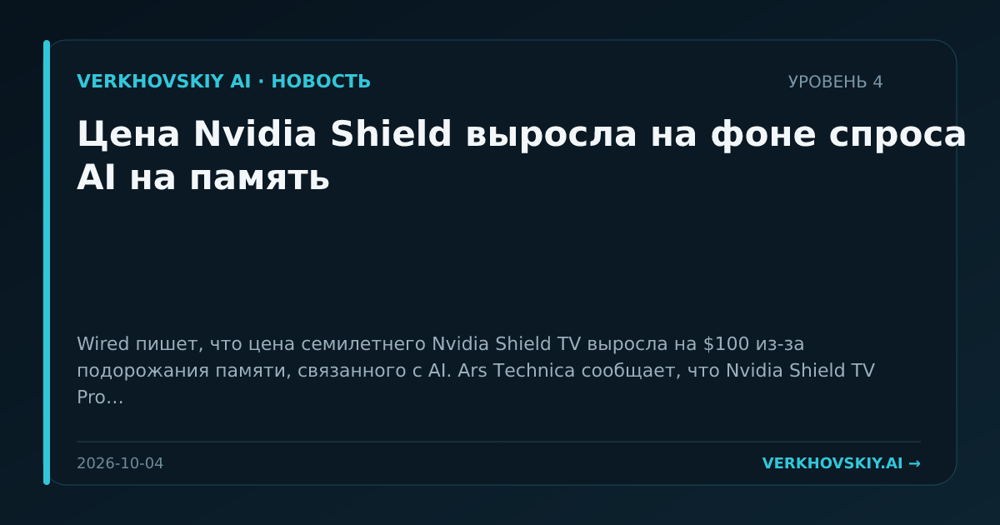

Цена Nvidia Shield выросла на фоне спроса AI на память
Wired пишет, что цена семилетнего Nvidia Shield TV выросла на $100 из-за подорожания памяти, связанного с AI. Ars Technica сообщает, что Nvidia Shield TV Pro теперь продаётся за $299,99. Почему это важно: AI-спрос на память начинает проявляться в потребительской электронике, а не только в центрах обработки данных. Это сигнал о конкуренции за компоненты между массовыми устройствами и AI-инфраструктурой.